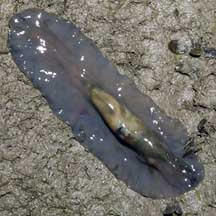
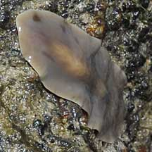
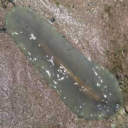
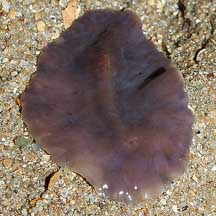
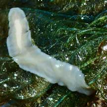
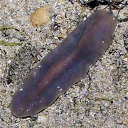

|
|
| flatworms text index | photo index |
| worms > Phylum Platyhelminthes > Class Turbellaria > Order Polycladida |
| Phlegm
flatworm awaiting identification* Suborder Acotylea updated Feb 2020 Where seen? Ah choo!! Did someone just sneeze?! Resembling mobile phlegm, this flesh-coloured flatworm is sometimes seen on our Southern shores. On rocky shore boulders and under stones near the high water mark. It moves rapidly and changing shape from nearly circular to elongated as it slithers rapidly. Features: 6-10cm. This large, rather fleshy flatworm is usually a uniformly pinkish or greyish beige, with a very smooth body surface. Sometimes slightly translucent with its internal parts visible. It does not have obvious pseudotentacles. It seems to eat rather large prey for a flatworm and is sometimes seen with alarmingly large lumps in the body. |
|
 With large lump in its body. Labrador, May 06 |
 Sentosa, Jun 09 |
 Sentosa, Jan 06 |
*Species are difficult to positively identify without close examination.
On this website, they are grouped by external features for convenience of display.
| Phlegm flatworms on Singapore shores |
On wildsingapore
flickr
|
| Other sightings on Singapore shores |
 Tanah Merah, Oct 09 Photo shared by James Koh on his blog. |
 Big SIsters Island, Feb 22 Photo shared by Toh Chay Hoon on facebook. |
 Pulau Salu, Aug 10 |
Acknowledgements References
|